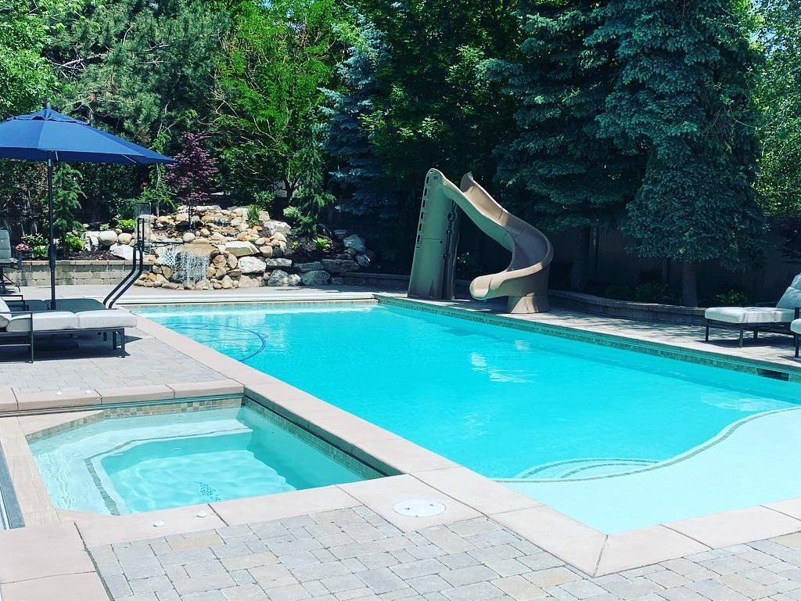
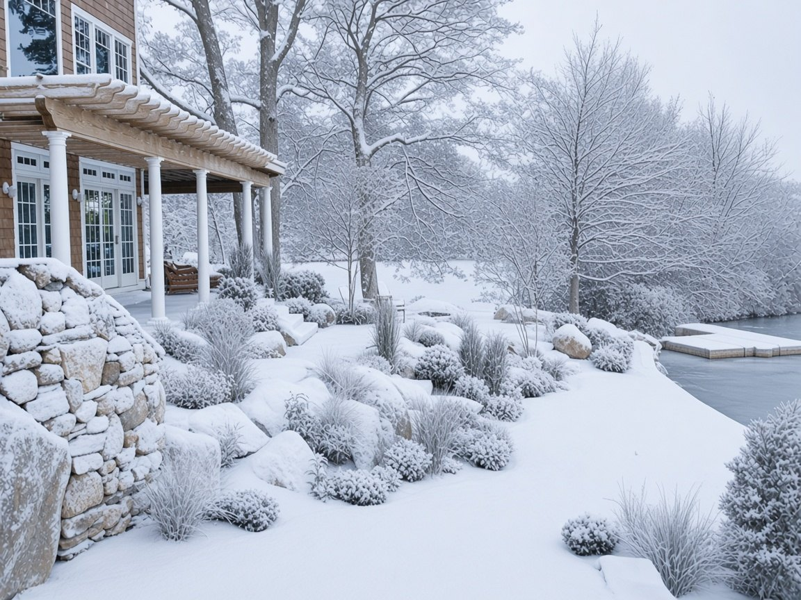
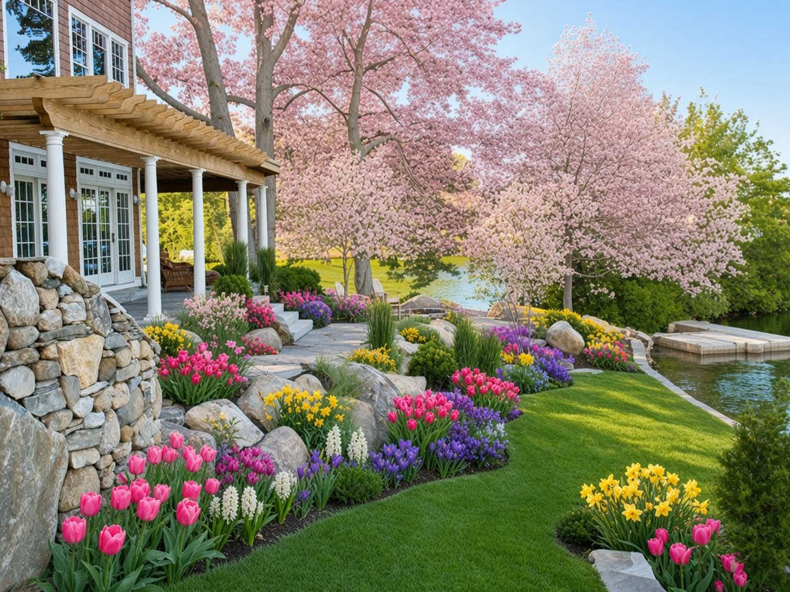
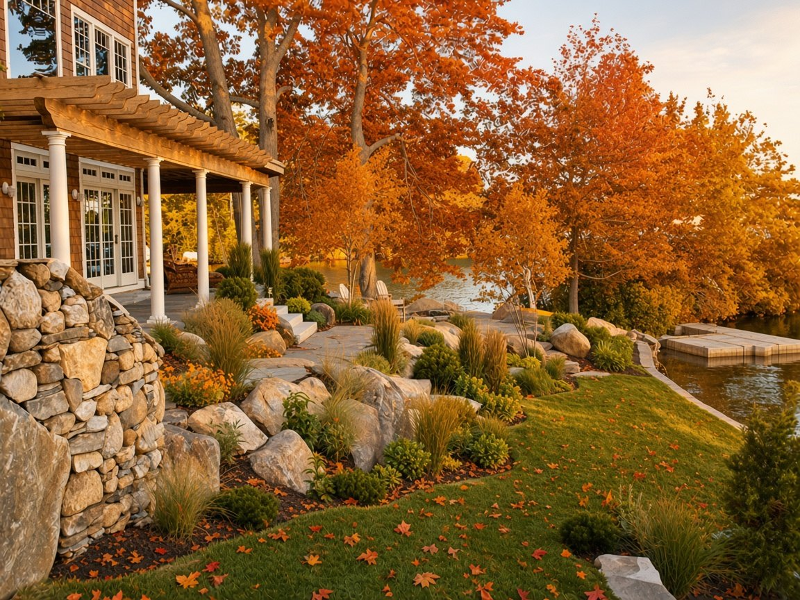
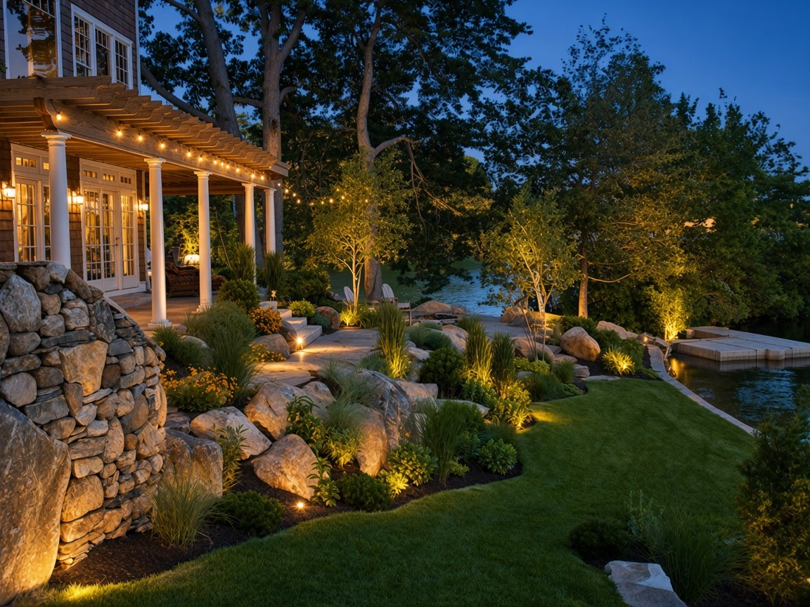
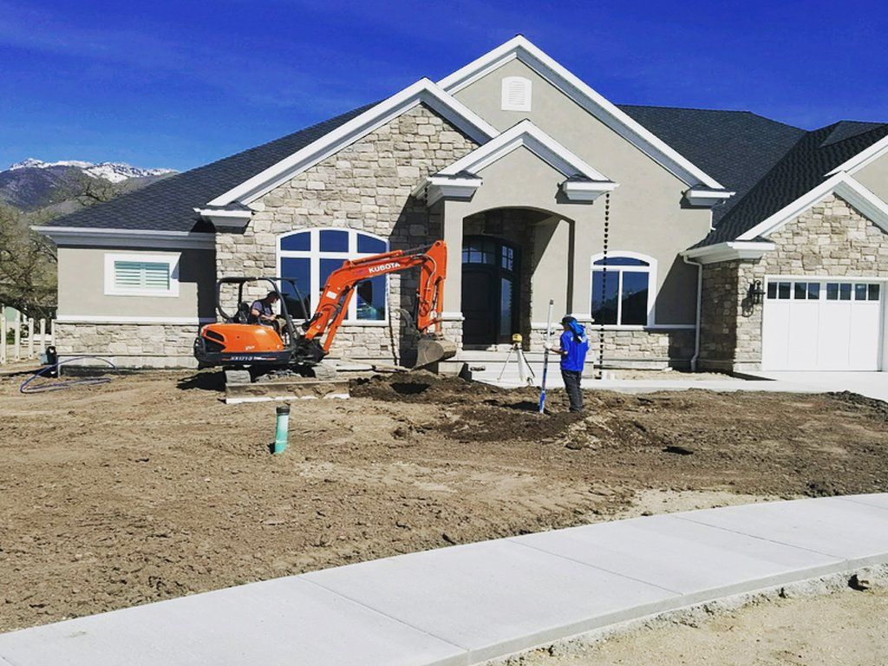
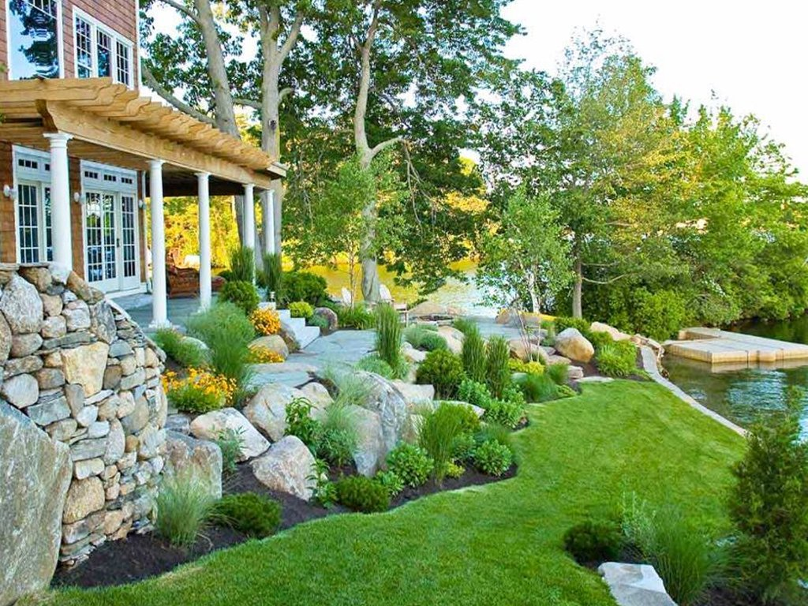
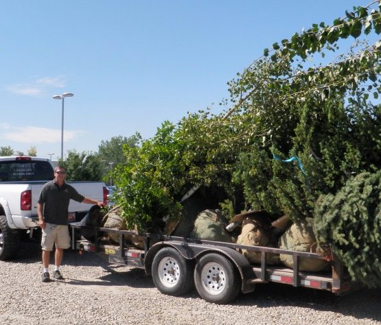

Licensed and bonded in Utah · Since 2002
Design, install, and year-round care for homes and businesses from Salt Lake to Provo. Patios, sod, sprinklers, walls, lighting, and snow removal when winter hits.




One yard, all year
Snow and ice management keeps lots and walks clear all winter.
Same yard, four seasons. The base is a real Frost project photo (frostlandscape.net); the seasons and the lighting are AI edits for this concept.



Where we work: Davis, Salt Lake, Summit, Tooele, and Utah counties. Bountiful · Salt Lake City · Park City · Tooele · Murray · Holladay · Sandy · Draper · South Jordan · Herriman · Lehi · American Fork · Orem · Provo
Powered by Apex Local Sites
Tell us about your yard. We call back within one business day. Simulated